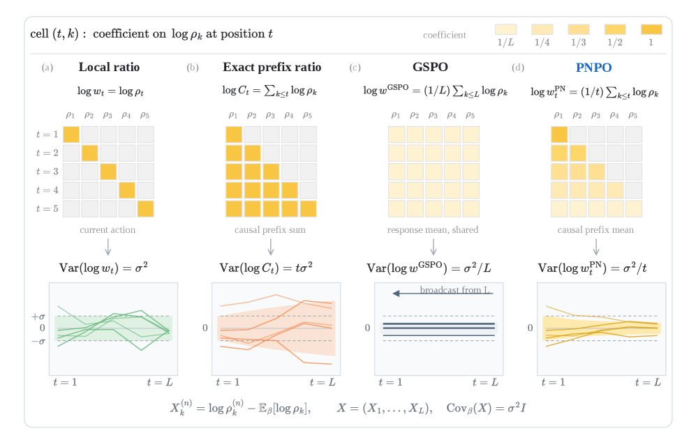
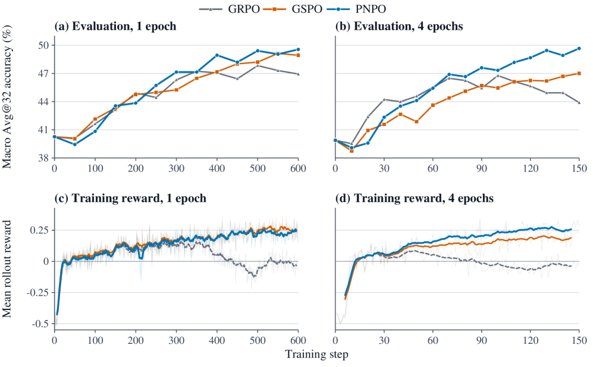
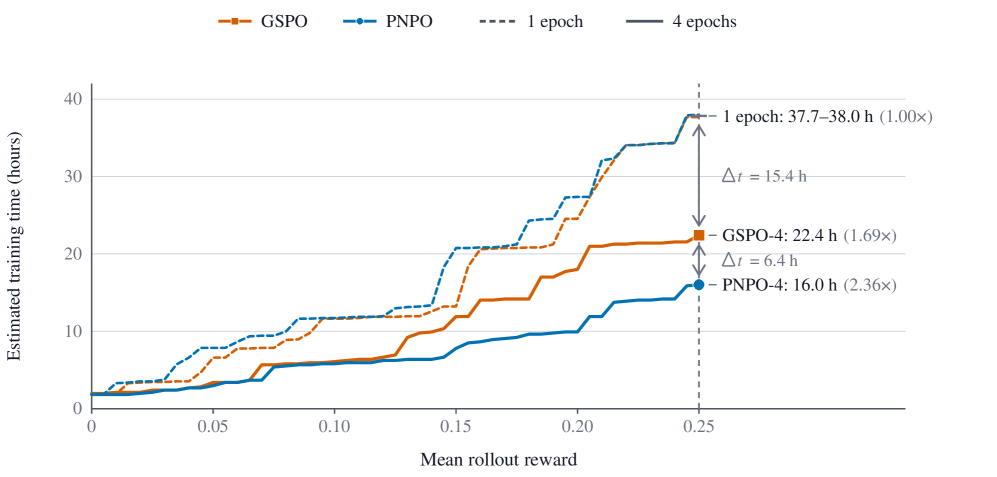

自回归 rollout 生成是 LLM 强化学习里最主要的计算成本。把每一批 rollout 复用来做额外的 learner 更新，能把这份成本摊薄——但代价是后面的更新会随着 learner 偏离行为策略而越来越 off-policy。
这篇工作研究 Prefix-Normalized Policy Optimization（PNPO）：不追求精确但动态范围难控的累积重要性比，而是用沿每个因果前缀的似然比几何平均来估计权重。在受控的长上下文数学推理实验里，当 rollout 被复用 4 次（4 epochs）时，PNPO 在每个 benchmark 都拿到最高 Avg@32，三基准峰值均值比 GSPO 高 3.00 分。
在 token 级，精确的 off-policy 校正必须同时考虑当前 action 和到达其前缀的概率。累积重要性比（cumulative importance ratio）正是提供了这份校正——但它是乘积形式，随序列长度指数级变化的动态范围，对优化极不友好。
于是出现一个张力：要不要做因果前缀校正？做，权重尺度过大不稳；不做（只看当前 token），又丢失了策略漂移的累积路径信息。
这正是 PNPO 要调和的核心矛盾：既要前缀依赖，又要可控的权重尺度。
PNPO 的做法是把累积比值换成几何平均：位置 t 的权重 `w_t^PN = exp((1/t) Σ_{k=1..t} log r_k)`——沿因果前缀到位置 t 的似然比的几何平均。
这里的 1/t 次幂同时调节当前 token 比和所有前序比：既保留了每个位置「这个 token 以及走到它的前缀」这一因果依赖，又把 log-weight 尺度压实，避免乘积累积带来的失控动态范围。

对比一下现有选项（Figure 1 顶部）：local log-ratio 只看当前 token；精确累积 log-ratio 对整条前缀求和（尺度大）；GSPO 把整个响应的均值比广播到每个位置（丢了前缀位置差异）；而 PNPO 在每个位置用的是对应的前缀均值——前缀信息保留、全响应共享信息也保留，尺度却可控。
论文在控制的长上下文数学推理任务上评测，基准含 AMC 2023、AIME 2024、AIME 2025。训练时每步采样 256 个 prompt × 8 个 response（共 2048 条 response），并用每批 rollout 做 1 次或 4 次策略更新（1/4 policy-update epochs）来诱导两种不同的 off-policy regime。
结果一：1 epoch 时 PNPO 并不持续优于 GSPO——off-policy 程度不高时，前缀几何平均的优势不明显，两种权重都够用。

结果二：4 epochs 时 PNPO 在每个 benchmark 都取得最高的 Avg@32。三个单独挑出的 benchmark 峰值的无权重均值是 50.24，比 GSPO 高 3.00 分——off-policy 越重，PNPO 的前缀校正越有价值。
在匹配的 2,400 次 update 预算下，4-epoch PNPO 达到最终 macro Avg@32 49.66。更重要的是，它用四分之一的新生成 response 就达到了相当的最终性能——说明在重 off-policy regime 下，PNPO 让每一批 rollout 都被更充分地榨干价值。
Figure 3 用首达时间估计了达到平均 rollout reward 0.25 的耗时：在各自 regime 的每步耗时节拍下，PNPO 的推进同样更具优势。

这对训练成本的意义很直接：想省 rollout 生成的钱，就得容忍更 off-policy 的 reuse，而 PNPO 正是为这种高复用 regime 设计的权重方法。
PNPO 的要点是把「精确但尺度爆炸」与「近似但丢前缀」之间，找到了一个平衡点：前缀似然比的几何平均。它在每个位置既算上走到这里的因果前缀，又把权重尺度压住，让高复用、高 off-policy 的训练稳定。
对跑 LLM RL 的团队，如果 rollout 生成是瓶颈、想靠复用省成本，PNPO 是 GSPO 之外一个更适应少生成、多迭代场景的选择——尤其在 4-epoch 这类重 off-policy regime 下优势明确。
值得强调的是它和既有方法的差异点：GSPO 把整响应均值广播、丢失前缀位置差异；PNPO 用前缀均值保留了「这个 token 以及走到它的前缀」这一依赖，却不像精确累积比值那样尺度失控。用几乎一样的代价，换到更稳的权重与更充分的 rollout 复用。
参考：https://arxiv.org/abs/2608.01418v1